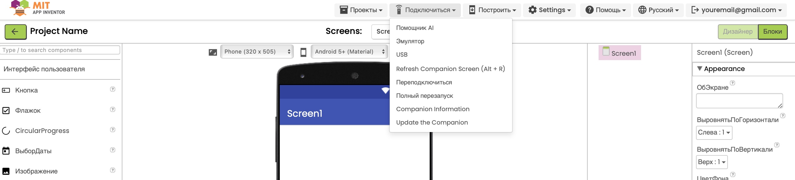

Проект "Привет, мир!"
Цель: Создать простое мобильное приложение, которое при
нажатии на кнопку выводит сообщение "Привет, мир!".
Этот проект поможет познакомиться с основными элементами MIT App
Inventor: Добавление кнопки (Button) и надписи (Label) на экран.
Программирование реакции на нажатие кнопки с помощью блоков.
Следуйте приведенным ниже шагам для реализации проекта. После каждого выполненного шага нажмите кнопку «Пометить как выполнено».


Текст – оставьте пустым (пока ничего не отображается).
РазмерТекста – например, 20 (чтобы текст был крупнее).
ЦветТекста – выберите цвет (например, чёрный или синий).
Текст – "Привет!".
РазмерТекста – например, 20 (чтобы текст был крупнее).
ЦветТекста – выберите цвет (например, чёрный или синий).

Вставьте блок текста (из вкладки Текст) и присоедините его к предыдущим блокам.
Вставьте текст "Привет, мир!" в блок текста.

Для изучения способов загрузки и тестирования приложения перейдите к разделу «Загрузка и установка приложений» на странице «Введение в MIT App Inventor». Там подробно описаны все варианты установки и тестирования вашего проекта на мобильном устройстве.
